Sequence Alignment Pipeline
Mukarram Hossain
Department of Veterinary Medicine
University of Cambridge

Multiple sequence alignment
- Evolutionary studies typically start by aligning molecular sequences
- Multiple sequence alignment (MSA) represents the shared evolutionary history among a group of sequences
- Sequences are aligned by establishing sitewise homology among related residues
- Alignments inform us about:
- evolutionary process
- structural/functional diversity
- pattern of selection
Sequence alignment
- Computational tools are used to automatically align set of sequences
- Residues (e.g. A, T, C, G) placed together in columns are believed to have evolved from a common ancestor
- Mismatch between residues represents substitution
- Gaps ('-') in the alignment usually denote insertion/deletion
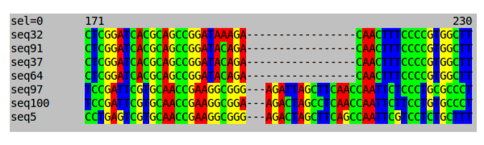
Do we need a new aligner?
- Majority of the aligners are developed for mammalian sequences
- Viruses evolve differently than mammals:
- high mutation rate
- fast generation time
- error prone replication
- higher indel rate
- frequent recombination
- Viruses are 'measurably evolving'
Do we need a new aligner?
- Aligners often fail to produce accurate alignment of virus sequences
- Sequence data may contain whole genome, complete genes or short fragments
- Unreliable sequences can be present
Alignment Pipeline (Pipelign)
- We have developed a semi-automatic alignment pipeline for virus sequences
- Pipelign progressively aligns groups of sequences
- Systematically identifies potential unrelated fragments
- Cluster of alignments are merged together
Pipelign - split
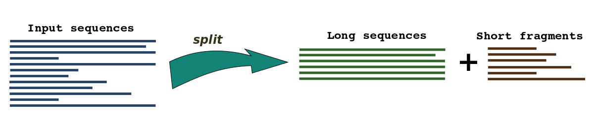
Pipelign - Clustering
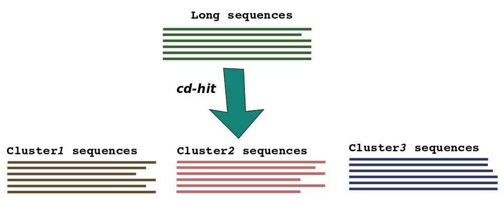
Pipelign - Align & HMM
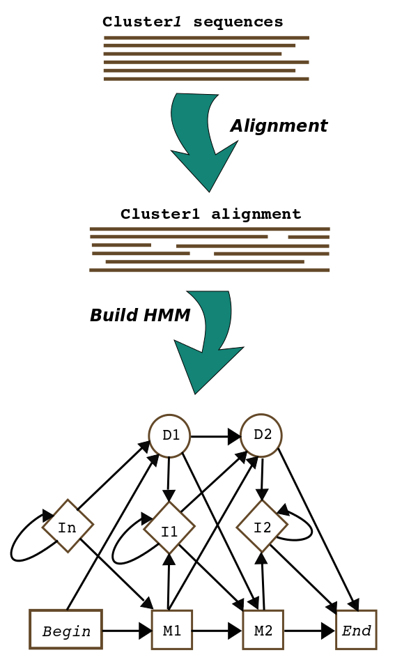
Pipelign - HMM database
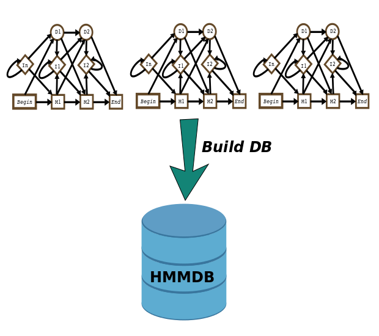
Pipelign - Cluster fragments
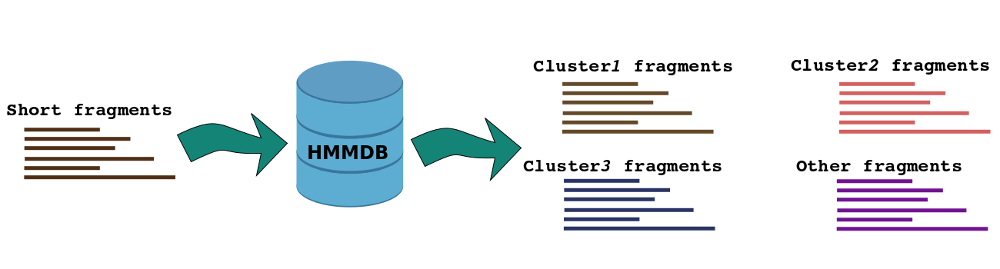
Pipelign - Align fragments
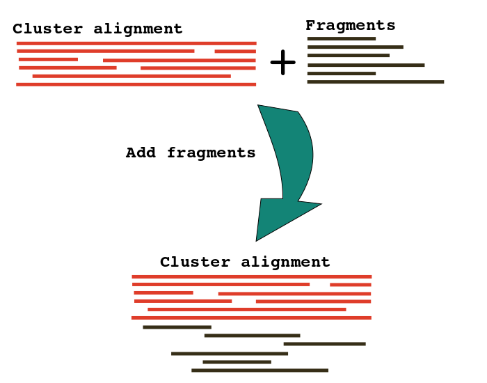
Pipelign - Merge clusters
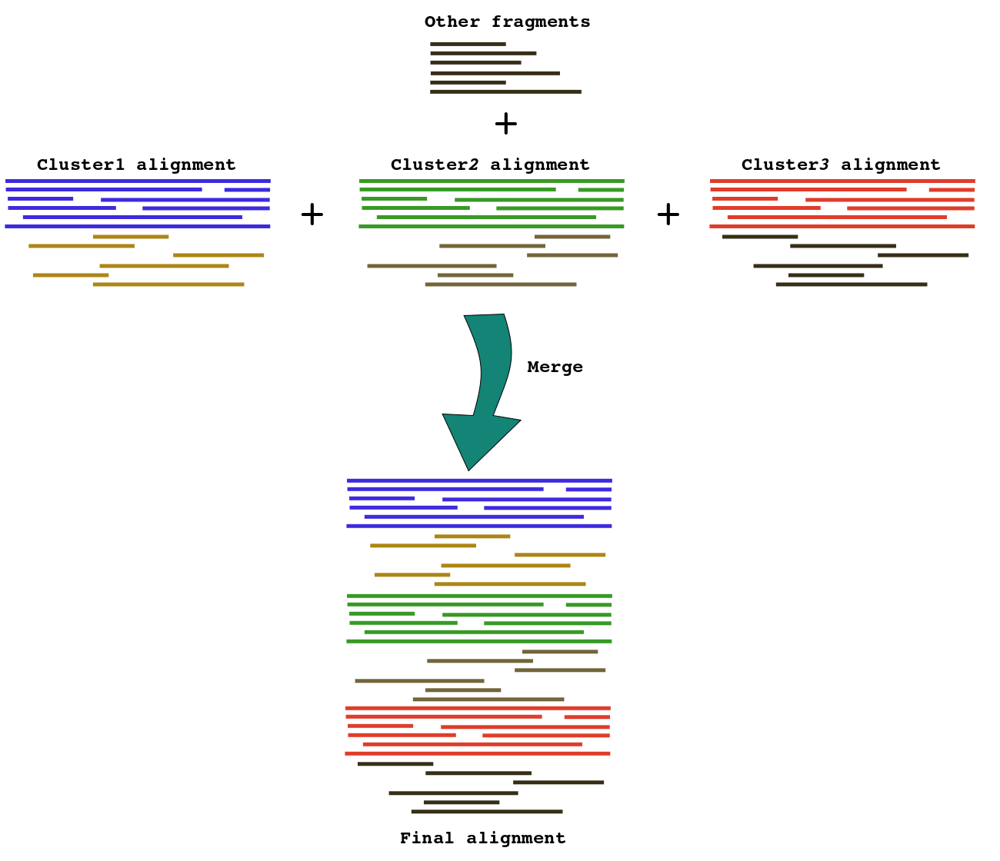
Benchmarking
- Process of evaluating by comparison with a standard
- Alignment tools are usually benchmarked using mammalian structural protein databases:
- BAliBASE
- PREFAB
- HOMSTRAD
- Simulation
- No standard for virus sequence alignments
Benchmarking - Metrices
- Alignments are generated by different methods
- Compared with the 'TRUE' structural alignment
- Accuracy is measured by calculating percentage of alignment sites matching/mismathing the 'TRUE' alignment
- MetAl, FastSP
BAliBASE
- Developed and managed by Julie Thompson et al.
- Contains 218 full length and 168 homologous sequence sets and their TRUE alignments
- Divided into 6 groups
BAliBASE - MetAl
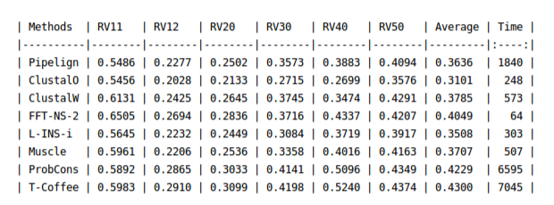
BAliBASE - MetAl
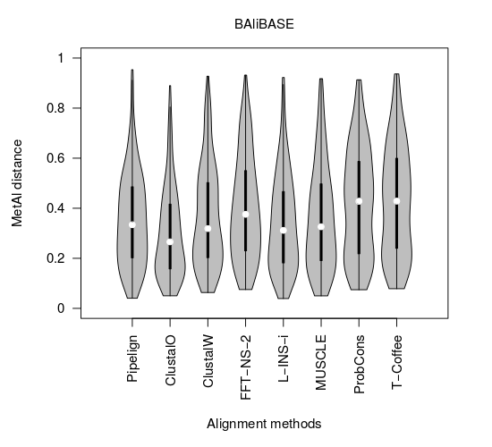
BAliBASE - SP
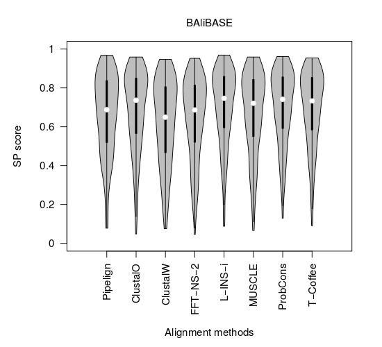
PREFAB
- Developed by Robert Edgar
- Was used to benchmark MUSCLE
- Contains 1682 alignments
PREFAB - MetAl
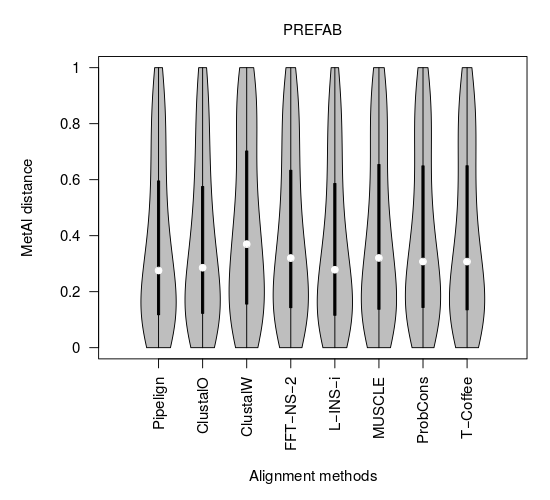
PREFAB - SP
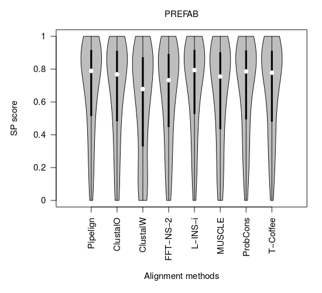
Simulation
- Two datasets are simulated using INDELible:
- DENV
- Influenza HA gene
- Each datasets contain 20 replicates of 100 sequences
- Simulation starts with a 1000bp long root sequence
- Substitutions, insertions and deletions are applied
DENV - MetAl
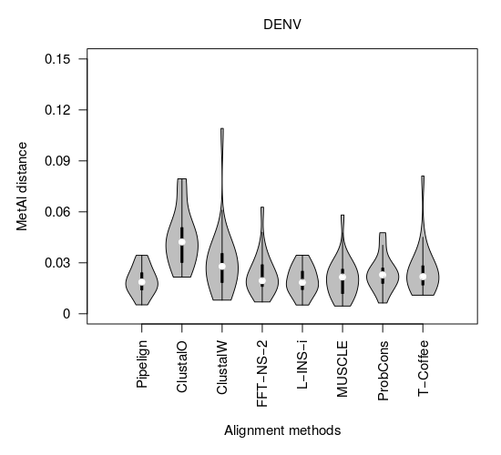
DENV - SP
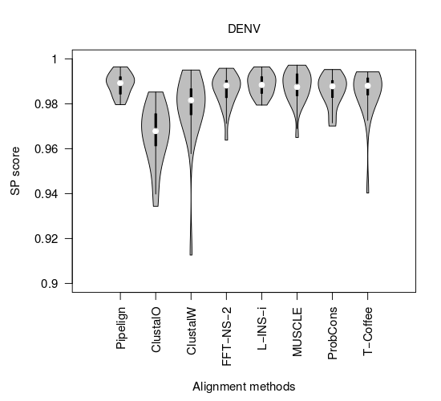
Influenza - MetAl
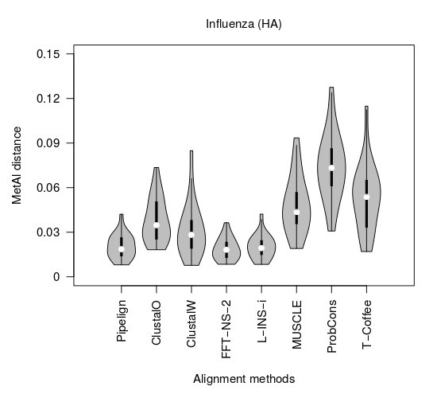
Influenza - SP
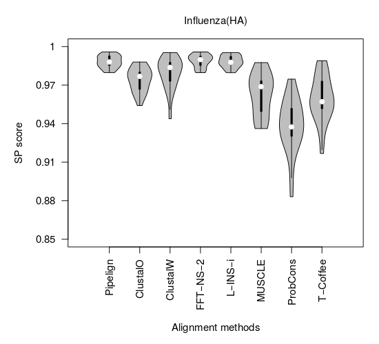
Work in Progress
- PANGEA simulated sequences
- Work with ambiguous sequences
- Finalise the pipeline
- Develope Docker container and Biobox container